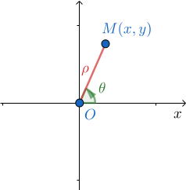
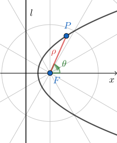
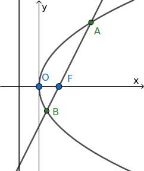
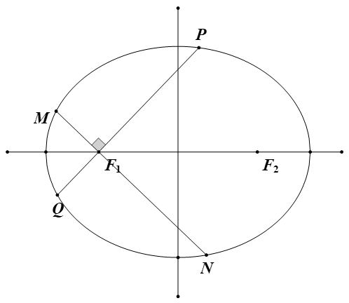
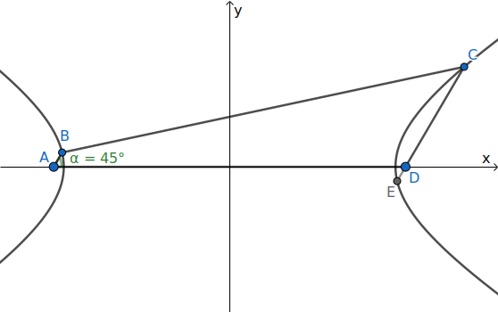
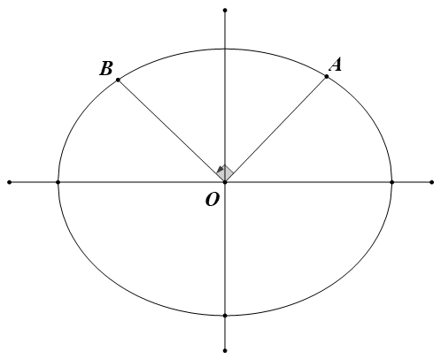

极坐标
在平面内取一个定点 \(O\)，叫极点，引一条射线 \(Ox\)，叫做极轴，再选定一个长度单位和角度的正方向（通常取逆时针方向）。对于平面内任何一点 \(M\)，用 \(\rho\) 表示线段 \(OM\) 的长度（有时也用 \(r\) 表示），\(\theta\) 表示从 \(Ox\) 到 \(OM\) 的角度，\(\rho\) 叫做点 \(M\) 的极径，\(\theta\) 叫做点 \(M\) 的极角，有序数对 \((\rho,\theta)\) 就叫点 \(M\) 的极坐标，这样建立的坐标系叫做极坐标系。
极坐标系用长度和角度取代了二维的坐标，相对于一般的直角坐标为下面的优点：
- 便于处理角度的关系
- 便于表示和计算长度

设 \(M\) 为平面上的一点，它的直角坐标为 \((x,y)\)，极坐标为 \((\rho,\theta)\)，易得互化公式：
\[\left\{ \begin{aligned} x &= \rho \cos \theta \\ y &= \rho \sin \theta \end{aligned} \right. \quad\text{or} \left\{ \begin{aligned} \rho^2 &= x^2+y^2 \\ \tan \theta &= \tfrac{y}{x} \ (x\neq 0) \end{aligned} \right. \]
圆锥曲线的极坐标方程
（1）以焦点为极点

记 \(|PF|=\rho\)，\(P\) 到准线 \(l\) 的距离为 \(d\)，焦点到准线的距离为 \(p\)，由圆锥曲线的统一定义知 \(\frac{\rho}{d}=e\)，由图形可得 \(d=p+\rho \cos\theta\)，代入得 \(\frac{\rho}{p+\rho \cos\theta}=e\)，整理后得到圆锥曲线的统一极坐标方程：
\[\rho=\frac{ep}{1-e\cos\theta} \]
当 \(e=0\) 时，轨迹为圆；\(0<e<1\) 时，轨迹为椭圆；\(e=1\) 时，轨迹为抛物线；\(e>1\) 时，轨迹为双曲线。
（2）以坐标原点为极点
在这里只考虑椭圆与双曲线的情况，抛物线也可类比：
椭圆或双曲线的标准方程（焦点在 \(x\) 轴上）为： \(\frac{x^2}{a^2}\pm\frac{y^2}{b^2}=1\)
代入 \(x=\rho \cos\theta\)，\(y=\rho \sin\theta\) 得：
\(\frac{\rho^2 \cos^2\theta}{a^2}\pm\frac{\rho ^2\sin^2\theta}{b^2}=1\)，提取 \(\rho^2\) 得：
\(\displaystyle\frac{1}{\rho ^2}=\frac{\cos^2\theta}{a^2}\pm\frac{\sin^2\theta}{b^2}\)，此方程表示椭圆或双曲线的轨迹。
取加号时，轨迹为椭圆；取减号时，轨迹为双曲线。
一些结论

如图，\(F\) 为圆锥曲线 \(E\) 的焦点，过 \(F\) 的直线交 \(E\) 与 \(A,B\) 两点，设直线 \(AB\) 的倾斜角为 \(\alpha\)，则
\[\begin{aligned} &|AF|=\frac{ep}{1-e\cos \alpha} ,\ |BF|=\frac{ep}{1+e\cos \alpha} \\ &|AB|=\tfrac{ep}{1-e\cos \alpha}+\tfrac{ep}{1+e\cos \alpha}=\frac{2ep}{1-e^2\cos^2 \alpha} \end{aligned} \]
（看成以 \(F\) 为极点的极坐标系，由圆锥曲线方程 \(\rho=\frac{ep}{1-e\cos\theta}\)，令 \(\theta=\alpha\) 可得 \(A\) 点的 \(\rho\)，即 \(|AF|\)；同理，令 \(\theta=\alpha+\pi\) 得到 \(B\) 的，再用诱导公式 \(\cos(\theta+\pi)=-\cos \theta\)）
当椭圆与双曲线以标准方程表示时，焦准距 \(p=\frac{b^2}{c}\)，离心率 \(e=\frac{c}{a}\)，那么
\[\begin{aligned} &|AF|=\frac{b^2}{a-c\cos \alpha} ,\ |BF|=\frac{b^2}{a+c\cos \alpha} \\ &|AB|=\frac{2ab^2}{a^2-c^2\cos^2\alpha} \end{aligned} \]
若 \(\frac{|AF|}{|BF|}=\lambda\)，则 \(\frac{1+e\cos \alpha}{1-e\cos \alpha}=\lambda\)，解出
\[e\cos \alpha = \frac{\lambda-1}{\lambda+1} \]
已知 \(e,\lambda\) 时，可用上式求倾斜角。
特殊地，当该曲线为抛物线时，\(e=1\)，有
\[\begin{aligned} & |AF|=\frac{p}{1-\cos \alpha} \\ & |BF|=\frac{p}{1+\cos \alpha} \\ & |AB|=\frac{2p}{\sin^2 \alpha} \end{aligned} \]
应用
（1）以焦点为极点
例 1 （2017 年全国Ⅰ卷）10．已知 \(F\) 为抛物线 \(C:y^2=4x\) 的焦点，过作两条互相垂直的直线 \(l_1\)，\(l_2\)，直线 \(l_1\) 与 \(C\) 交于 \(A\)、\(B\) 两点，直线 \(l_2\) 与 \(C\) 交于 \(D\)、\(E\) 两点，则 \(|AB|+|DE|\) 的最小值为（ ） A.16 B.14 C. 12 D.10
解 \(p=2\)，设直线 \(AB\) 的倾斜角为 \(\alpha\)，则直线 \(DE\) 的倾斜角为 \(\alpha+\frac{\pi}{2}\)
使用结论：\(|AB|=\frac{2p}{\sin^2\alpha}=\frac{4}{\sin^2\alpha}\)，同理 \(|DE|=\frac{4}{\sin^2(\alpha+\frac{\pi}{2})}=\frac{4}{\cos^2\alpha}\)
所以 \(|AB|+|DE|=\frac{4}{\sin^2\alpha}+\frac{4}{\cos^2\alpha}=\left(\frac{4}{\sin^2\alpha}+\frac{4}{\cos^2\alpha}\right)\times 1=\left(\frac{4}{\sin^2\alpha}+\frac{4}{\cos^2\alpha}\right)\left(\sin^2\alpha+\cos^2\alpha\right)\geq(\frac{2}{\sin \alpha}\sin \alpha +\frac{2}{\cos\alpha}\cos \alpha)^2=(2+2)^2=16\) （柯西不等式）
例 2 （模型来自于同济大学自招题）已知椭圆 \(C:\frac{x^2}{4}+\frac{y^2}{3}=1\)，过左焦点作两条相互垂直的直线，交椭圆于 \(M,N,P,Q\) 四点，求四边形 \(MNPQ\) 的面积的取值范围。

解 依题意 \(e=\frac{1}{2}\)，\(p=3\)，设直线 \(PQ\) 的倾斜角为 \(\alpha\)，则直线 \(MN\) 的倾斜角为 \(\alpha+\frac{\pi}{2}\)
\(|PQ|=\frac{2ep}{1-e^2\cos^2\alpha}=\frac{12}{4-\cos^2\alpha}=\frac{12}{\sin^2\alpha+3}\)
用 \(\alpha+\frac{\pi}{2}\) 代替 \(\alpha\) 得：\(|MN|=\frac{12}{\cos^2\alpha+3}\)
所以 \(S=\frac{1}{2}|PQ||MN|=\frac{72}{(4-\cos^2\alpha)(\cos^2\alpha+3)}\)
此处换元后易求得范围。
例 3 已知梯形 \(ABCD\) 满足 \(AB/\!/CD\)，\(\angle BAD =45^\circ\)，以 \(AD\) 为焦点的双曲线 \(\Gamma\) 经过 \(B,C\) 两点，若 \(CD=7AB\)，则 \(\Gamma\) 的离心率为 A.\(\frac{3\sqrt{2}}{4}\) B.\(\sqrt{2}\) C.\(\frac{3\sqrt{2}}{2}\) D.\(2\sqrt{2}\)

解 延长 \(CD\) 交 \(\Gamma\) 于点 \(E\)，由对称性知 \(DE=AB\)，因此 \(\frac{CD}{DE}=\frac{CD}{AB}=7\) 即 \(\lambda=7\)
运用结论 \(e\cos 45^\circ = \frac{\lambda-1}{\lambda+1}\)，得 \(\frac{e}{\sqrt{2}}=\frac{6}{8}=\frac{3}{4}\)，\(e=\frac{3\sqrt{2}}{4}\)
（2）以坐标原点为极点
例 4 已知椭圆 \(C:\frac{x^2}{a^2}+\frac{y^2}{b^2}=1\)，过原点作两条射线 \(OA\)，\(OB\)，交椭圆于 \(A,B\)，且满足：\(OA\bot OB\)，求证： \(\frac{1}{|OA|^2}+\frac{1}{|OB|^2}\) 为定值。

解 1 以坐标原点为极点，\(x\) 轴为极轴，建立极坐标系，则：
\(x=\rho \cos\theta\)，\(y=\rho \sin\theta\)，代入椭圆方程得：
\(\frac{1}{\rho ^2}=\frac{\cos^2\theta}{a^2}+\frac{\sin^2\theta}{b^2}\)
设直线 \(OA\) 的倾斜角为 \(\theta\)，则直线 \(OB\) 的倾斜角为 \(\theta+\frac{\pi}{2}\)
\(\frac{1}{|OA| ^2}=\frac{1}{\rho_1 ^2}=\frac{\cos^2\theta}{a^2}+\frac{\sin^2\theta}{b^2}\)
用 \(\theta+\frac{\pi}{2}\) 代替 \(\theta\) 得：
\(\frac{1}{|OB| ^2}=\frac{1}{\rho_2 ^2}=\frac{\sin^2\theta}{a^2}+\frac{\cos^2\theta}{b^2}\)
两式相加得： \(\frac{1}{|OA|^2}+\frac{1}{|OB|^2}=\frac{\cos^2\theta+\sin^2\theta}{a^2}+\frac{\sin^2\theta+\cos^2\theta}{b^2}=\frac{1}{a^2}+\frac{1}{b^2}\)，为定值
用此方法的证明极度简洁，但担心会被扣分，因此给出如下“角参”的做法：
解 2 记 \(|OA|=m\)，\(|OB|=n\)，\(\angle AOx=\theta\)，\(\angle BOx=\theta+\frac{\pi}{2}\)
则 \(A(m\cos\theta,m\sin\theta)\)，\(B(n\cos(\theta+\frac{\pi}{2}),n\sin(\theta+\frac{\pi}{2}))\)，即 \(B(-n\sin\theta,n\cos\theta)\)，代入椭圆方程得：
\(\frac{1}{m^2}=\frac{\cos^2\theta}{a^2}+\frac{\sin^2\theta}{b^2}\)
\(\frac{1}{n^2}=\frac{\sin^2\theta}{a^2}+\frac{\cos^2\theta}{b^2}\)
两式相加得： \(\frac{1}{m^2}+\frac{1}{n^2}=\frac{\cos^2\theta+\sin^2\theta}{a^2}+\frac{\sin^2\theta+\cos^2\theta}{b^2}=\frac{1}{a^2}+\frac{1}{b^2}\)，为定值。
其实本质上还是极坐标的思想，不过这样写就不会被当作超纲了。
在这里有人可能会想到椭圆的参数方程： \((a\cos\theta,b\sin\theta)\)
但是由于参数方程里面的 \(\theta\) 并没有明确的几何意义，垂直难以表示，因此在这里不能使用！